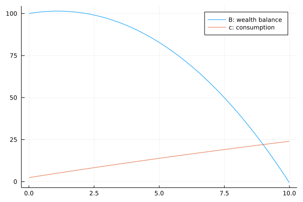
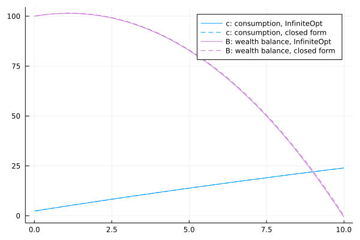

Consumption Savings Problem
In this case study, a household endowed with $B_0$ dollars of wealth must decide how much to consume and save to maximize its utility over its finite lifecycle.
Formulation
The corresponding dynamic optimization problem is expressed:
\[\begin{aligned} &V(B_0,0) = &&\underset{c(t), B(t)}{\text{max}} \int_{t = 0}^{t=T} e^{-\rho t} u(c(t)) dt \\ &\text{s.t.} \\ &&& \frac{dB}{dt} = r \times B(t) - c(t), && t \in [0,T] \\ &&& B(0) = B_0 \\ &&& B(T) = 0 \end{aligned}\]
where the household lives during time $t \in [0,T]$, the state variable $B(t)$ is the household's stock of wealth at time $t$, the choice variable $c(t)$ is the household's consumption at time $t$, $r$ is the interest rate, $B_0$ is the household's wealth endowment (initial condition), $B(T) = 0$ is the terminal condition, and $T$ is the time horizon.
Model Definition
Let's implement this in InfiniteOpt and first import the packages we need:
using InfiniteOpt, IpoptWe set the preference and constraint parameters:
ρ = 0.025 # discount rate
k = 100.0 # utility bliss point
T = 10.0 # life horizon
r = 0.05 # interest rate
B0 = 100.0 # endowment
u(c; k=k) = -(c - k)^2 # utility function
discount(t; ρ=ρ) = exp(-ρ*t) # discount function
BC(B, c; r=r) = r*B - c # budget constraintBC (generic function with 1 method)We set the hyperparameters:
opt = Ipopt.Optimizer # desired solver
ns = 1_000; # number of points in the time grid
We initialize the infinite model and choose the Ipopt solver:
m = InfiniteModel(opt)An InfiniteOpt Model
Feasibility problem with:
Finite Parameters: 0
Infinite Parameters: 0
Variables: 0
Derivatives: 0
Measures: 0
Optimizer model backend information:
Model mode: AUTOMATIC
CachingOptimizer state: EMPTY_OPTIMIZER
Solver name: IpoptLet's specify our infinite parameter which is time $t \in [0, T]$:
@infinite_parameter(m, t in [0, T], num_supports = ns)tNow let's specify the variables:
@variable(m, B, Infinite(t)) ## state variables
@variable(m, c, Infinite(t)) ## control variablesc(t)Specify the objective:
@objective(m, Max, integral(u(c), t, weight_func = discount))∫{t ∈ [0, 10]}[-c(t)² + 200 c(t) - 10000]Set the initial/terminal conditions:
@constraint(m, B(0) == B0)
@constraint(m, B(T) == 0)B(10) = 0.0Set the budget constraint:
@constraint(m, c1, deriv(B, t) == BC(B, c; r=r))c1 : ∂/∂t[B(t)] - 0.05 B(t) + c(t) = 0.0, ∀ t ∈ [0, 10]Problem Solution
Optimize the model:
optimize!(m)
termination_status(m)LOCALLY_SOLVED::TerminationStatusCode = 4Extract the results:
c_opt = value(c)
B_opt = value(B)
ts = supports(t)
opt_obj = objective_value(m) # V(B0, 0)-67025.62174598583Plot the results:
using Plots
ix = 2:(length(ts)-1) # index for plotting
plot(ts[ix], B_opt[ix], lab = "B: wealth balance")
plot!(ts[ix], c_opt[ix], lab = "c: consumption")
That's it, now we have our optimal trajectory!
This very simple problem has a closed form solution:
λ1 = exp((r)T)
λ2 = exp(-(r-ρ)T)
den = (λ1-λ2)r
Ω1 = (k + (r*B0-k)λ2)/den
Ω2 = (k + (r*B0-k)λ1)/den
c0 = r*B0 + (r)Ω1 + (r-ρ)Ω2
BB(t; k=k,r=r,ρ=ρ,Ω1=Ω1,Ω2=Ω2) = (k/r) - Ω1*exp((r)t) + Ω2*exp(-(r-ρ)t)
cc(t; k=k,r=r,ρ=ρ,c0=c0) = k + (c0-k)*exp(-(r-ρ)t)cc (generic function with 1 method)Compare the solution given by InfiniteOpt with the closed form:
plot(legend=:topright);
plot!(ts[ix], c_opt[ix], color = 1, lab = "c: consumption, InfiniteOpt");
plot!(ts[ix], cc, color = 1, linestyle=:dash, lab = "c: consumption, closed form");
plot!(ts[ix], B_opt[ix], color = 4, lab = "B: wealth balance, InfiniteOpt");
plot!(ts[ix], BB, color = 4, linestyle=:dash, lab = "B: wealth balance, closed form")
Not bad!
Maintenance Tests
These are here to ensure this example stays up to date.
using Test
@test termination_status(m) == MOI.LOCALLY_SOLVED
@test has_values(m)
@test B_opt isa Vector{<:Real}
@test c_opt isa Vector{<:Real}Test PassedThis page was generated using Literate.jl.